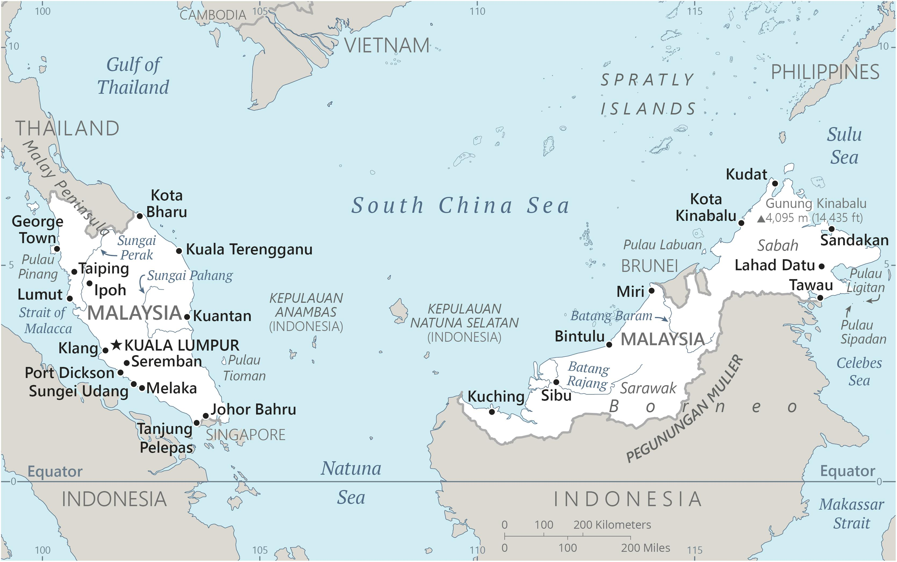

Genel Bilgiler
Malezya, Güneydoğu Asya’da yer alan federal anayasal monarşi ile yönetilen bir ülkedir. Başkenti Kuala Lumpur’dur; idari merkezi Putrajaya’dır. Yaklaşık 33 milyon nüfusa sahiptir. Resmî dili Malayca’dır ve para birimi Malezya Ringgiti (MYR)’dir. Malezya, ASEAN üyesi olup ekonomik ve kültürel açıdan bölgesel bir öneme sahiptir.
Malezya, Malay Yarımadası’nın güneyinde ve Borneo Adası’nın kuzeyinde yer alır. Batıda Tayland, doğuda Endonezya ve Brunei ile çevrilidir; güneyde Singapur’a deniz sınırı vardır. Yüzölçümü yaklaşık 330.803 km²’dir. Ülke coğrafyası dağlık bölgeler, tropikal yağmur ormanları ve kıyı ovalarından oluşur. Önemli nehirleri Pahang, Rajang ve Kinabatangan’dır.
Başkent: Kuala Lumpur
Kıta: Asya
Yüzölçümü: 330.803 km²
Nüfus (2025): 33.000.000

Bayrak Anlamı: Malezya bayrağı yatay 14 kırmızı ve beyaz şeritten oluşur; sol üst köşede mavi zemin üzerinde sarı bir ay ve 14 kollu yıldız bulunur. Kırmızı cesareti, beyaz saflığı, mavi birlik ve istikrarı, sarı ay ve yıldız ise monarşi ve federal devletin birlikteliğini simgeler. Bayrak 1963 yılında kabul edilmiştir.
Malezya Haritası
Ekonomi
Malezya ekonomisi ihracata dayalı ve çeşitlenmiş bir yapıya sahiptir. Sanayi, tarım ve hizmet sektörleri ekonomide önemli rol oynar. Sanayi alanında elektronik, petrol ve gaz, otomotiv ve palmiye yağı işleme öne çıkar. Tarımda kauçuk, palm yağı ve kahve üretimi yaygındır. Hizmet sektörü turizm, finans ve lojistik alanlarında güçlüdür ve ülke ekonomisinin temelini oluşturur.
| Yıl | İhracat (Milyar $) | İthalat (Milyar $) |
|---|---|---|
| 2019 | 236 | 205 |
| 2020 | 210 | 185 |
| 2021 | 240 | 220 |
| 2022 | 260 | 240 |
| 2023 | 270 | 250 |